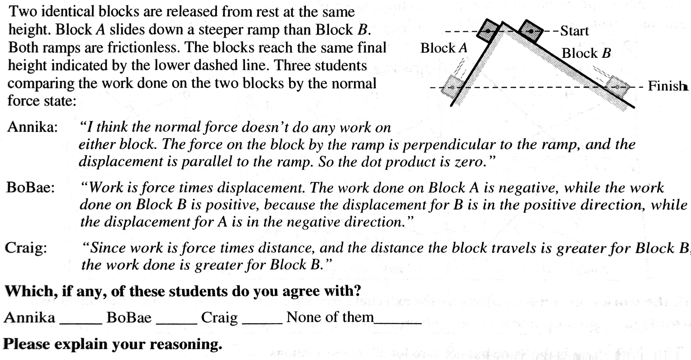
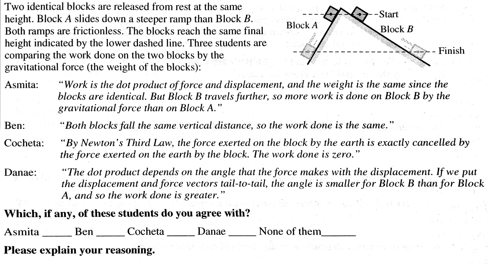
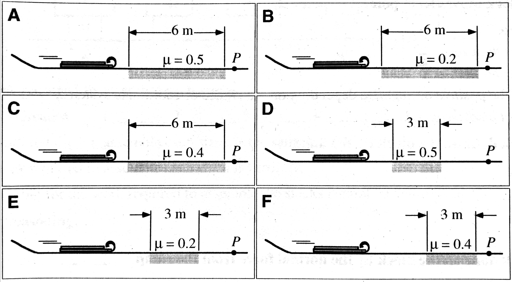
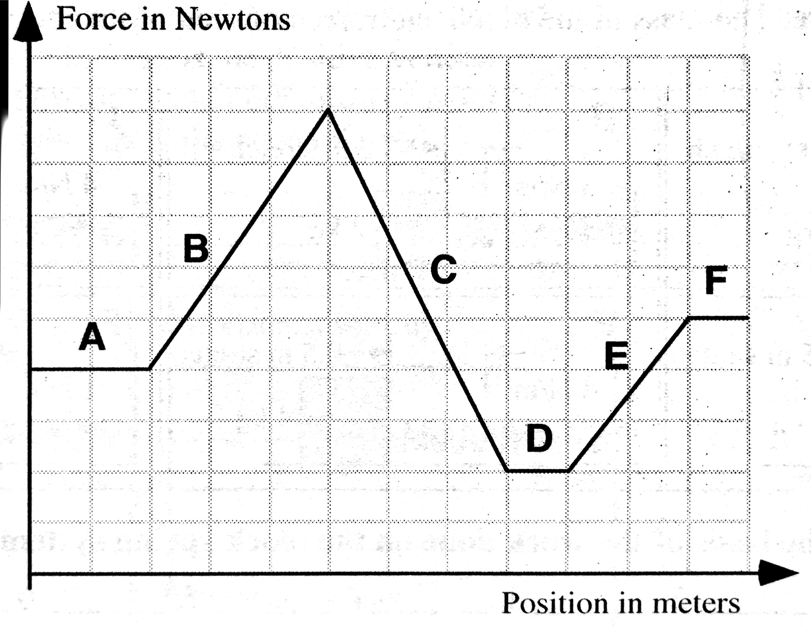
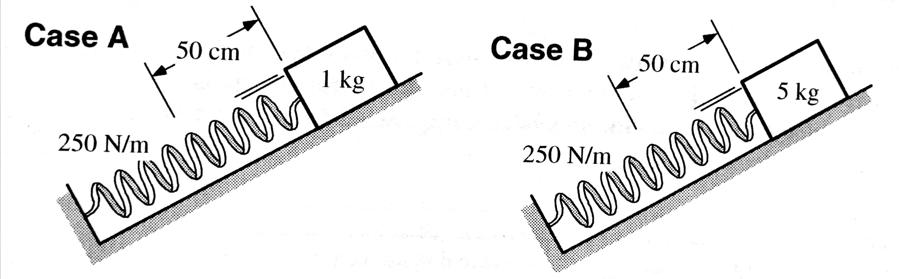
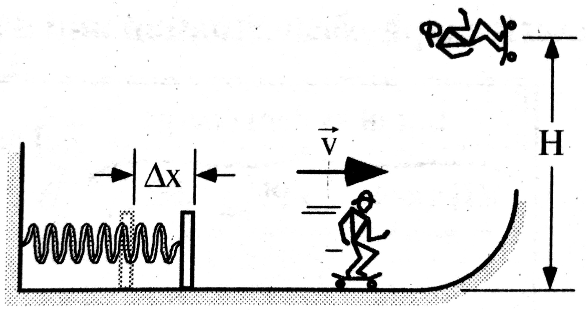
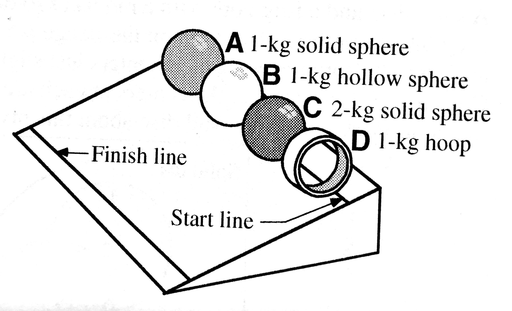
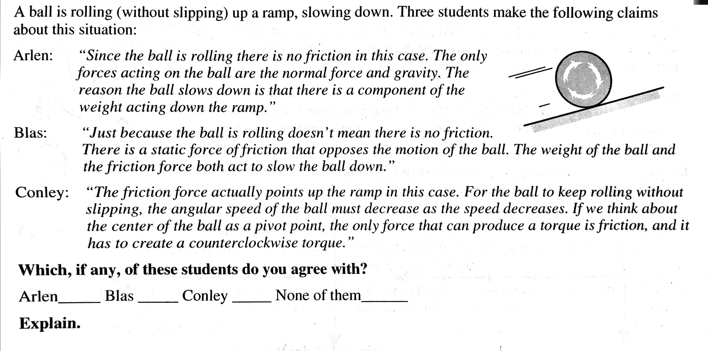
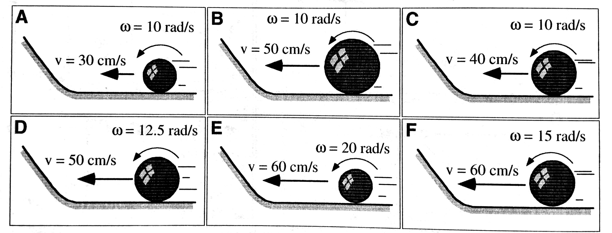

layout: true <div class="my-header"><img src="../figures/scsdLogo.png" style="height: 70px;"/></div> --- class: center, middle .title[AP Exam Review] .subtitle[*Energy*] .author[👨🏻🏫 Nathan Porter] .institution[🏫 Maple Hill High School] .coauthor[] .institution[] .date[📅 2019-2020] .center[] <!--.footnote[Created with [{Remark.js}](http://remarkjs.com/) using [{Markdown}](https://daringfireball.net/projects/markdown/) + [{MathJax}](https://www.mathjax.org/)]--> --- class:photoback background-image: url("https://media.giphy.com/media/KQkBRg2WBx11S/giphy.gif") #I Mustache Questions: -- ##What have you been listening to during the day? --- #Energy Definitions: Energy is measured in Joules = 1 Newton \* 1 meter - ***Kinetic Energy***: energy stored in motion -- - ***Translational Kinetic energy***: stored in the motion of the center of mass -- - ***Rotational Kinetic Energy***: stored in an object's rotation -- - ***Gravitational Potential Energy***: energy stored in the interaction between an object and the gravitational field. -- - ***Elastic potential energy***: energy stored between in the interaction between an elastic object (often a spring) and another object -- - ***Internal Energy***: often related to, but not limited to the temperature of the object. Describes the motion of the internal molecules of objects. -- - ***Mechanical Energy***: sum of the potential and kinetic energies -- - ***Work***: when a force acts on something that moves a distance parallel to the force. Changes the system energy. -- - ***Power***: energy used per second. The rate that work is done. -- --- #Kinetic Energy $$K = \frac{1}{2}mv^2$$ -- $$K = \frac{1}{2}I\omega^2$$ --- #Gravitational Potential Energy $$U_g = mg\Delta y$$ -- $$U_g = -\frac{Gm_1m_2}{r}$$ --- #Elastic Potential Energy $$U_s = \frac{1}{2}kx^2$$ --- #Work $$\Delta E = W = F_\parallel d = Fd\cos\theta$$ \*Note if the the force is perpendicular to the displacement, there is no work done: remember the waiter example. -- Positive work is done by a force parallel to an object’s displacement. -- Negative work is done by a force antiparallel to an object’s displacement. -- Work is a scalar quantity – it can be positive or negative, but does not have a direction. -- The area under a force vs. displacement graph is work. --- #Power $$P = \frac{\Delta E}{\Delta t}$$ Measured in Watts (W) --- #Working with Energy 1. Define your system. - Remember you cannot have `\(U\)` without Earth or a spring in your system. -- 2. In ***all systems*** all of the energy must be accounted for: - If a system gains energy, it must be through the action of an external force, and another system must lose the same amount of energy. -- 3. Make an qualitative energy bar graph: - Organize your thoughts --- .center[] ??? Normal force does no work because it is perpendicular to the displacement --- class: center, middle  ??? Only the parallel component of gravity does work. Case A has a larger component of gravity but a shorter distance. This is opposite for case B. These differences cancel out so gravity does the same work. --- The figures below show identical toboggans that have traveled down a snowy hill. The toboggans all have the same speed at the bottom of the hill. Assume that the horizontal surfaces that they travel along are all frictionless except for the shaded areas, where the coefficient of friction is given. These shaded areas have different lengths as shown. .center[] **Rank these situations on the basis of the speed of the toboggans as they reach point *P* from greatest to least.** ??? $$K = W$$ $$1/2 mv^2 = \mu mg d $$ $$v^2 = 2 \mu g d$$ Multiply `\(\mu\)` by d to rank. A > C > D > B = F > E --- The graph below shows the force that an employee exerts on a cart loaded with wood at a lumberyard. The force varies as a function of position. Six segments are marked in the graph. .center[] **Rank these segments on the basis of the energy that the employee transfers to the cart from greatest to least.** --- Two blocks are placed on a frictionless ramp and held against a spring that is compressed 50 cm. (The mass of the blocks and spring constant are given for each system.) The blocks are then released from rest, and the compressed spring causes the blocks to accelerate up the ramp while it is contact with the blocks. At the instant shown, the blocks are just about to lose contact with the end of the spring. .center[] ??? Ranking the Area under the curve for each section B > C > A > E > F > D --- .center[] Blake makes the following argument: *"I think they will both travel up the same distance along the inclines. The kinetic energy at the point shown in the diagram is equal to the initial energy stored in the compressed spring. This is the same for both cases since they both are compressed the same distance and have the same spring constants. The kinetic energy at the point shown is also equal to the gravitational potential energy at the top or mv`\(^2\)`/2 = mgh. Thus, the mass cancels out, leaving the same heights for each case."* **What if anything is wrong with this statement?** ??? Blake is correct that they have the same K, but that doesn't mean they have the same speed that they leave the spring with. While they have the same initial energy, the height is dependent upon mass, the greater the mass the less the height for this reason. -- **Argue which block will go heigher in terms of forces.** ??? discuss same force, but less mass, so larger average acc during the spring force. Larger acc leads to larger v that it leaves the spring with. Once leaves the spring they have the same net force, but the lesser massed object has more initial v so it goes further up the ramp because it takes longer to accelerate to zero v. --- A circus performer on a skateboard is launched by a spring initially compressed a distance `\(\Delta x\)` as shown. His speed on the horizontal portion of the ramp is `\(v\)`, and he rises to a height `\(H\)` after he leaves the ramp. He then conducts a second launch with the spring initially compressed a distance `\(2\Delta x\)` .center[] 1. For the second launch, will the speed of the skateboarder on the horizontal portion of the ramp be *greater than `\(2v\)`, less than `\(2v\)`, or equal to `\(2v\)`*? Explain 2. Will the height reached by the skateboarder for the second launch be *greater than `\(2H\)`, less than `\(2H\)`, or equal to `\(2H\)`*? Explain. ??? 1. Equal to 2v -- energy quadrupels, but v only doubles because of v^2 2. Greater than 2H --> energy 4x so height will be 4 times as great --- Four objects are placed in a row at the same height near the top of a ramp and are released from rest at the same time. The objects are (A) a 1-kg solid sphere; (B) a 1-kg hollow sphere; (C) a 2-kg solid sphere; and (D) a 1-kg thin hoop. All four objects have the same diameter, and the hoop has a width that is one quarter its diameter. The time it takes the objects to reach the finish line near the bottom of the ramp is recorded. The moment of inertia for a solid sphere is `\(\frac{2}{5}MR^2\)`; for a hallow sphere `\(\frac{2}{3}MR^2\)`; and for a thin hoop `\(MR^2\)`. .center[] **Rank the four objects from fastest (least time) down the ramp to slowest.** ??? Answer: A = C > B > D Each of these objects begins with gravitational potential energy at the top of the ramp that is comverted to kinetic energy at the bottom. The objects will have both translational and rotational KE at the bottom. Energy is conserved so we can set mgh = 1/2mv2 + 1/2Iω2. Assuming that all of the objects roll without slipping the translational KE will be proportional to the rotational KE. After some algebra we find that the masses cancel for each case and that the determining factor is the fraction in the moment of inertia for each object. --- class:middle,center  ??? Arlen -- if no friction then no rolling, or rolling speed wouldn't change. Blas -- Friciton in wrong direction Conley -- Nailed it. Flexing --- The six figures below show solid spheres (not drawn to scale) that are about to roll up inclines without slipping. The spheres all have the same mass, but their radii as well has their linear and angular speeds at the bottom of the incline vary. Specific values are given in the figures for the linear and angular speeds at the bottom. .center[] **Rank these systems on the basis of the maximum height reached on the incline by each sphere from greatest to least.** ??? Ranking v because they roll without slipping. Therefore you can convert rotational K into the linear equaivalent...Tricky question! Note -- not drawn to scale -- different r's lead to different omega + v relationships, notice how bigger r is lesser omega but greater v? Or greater v and greater omega = lesser r? --- $$K_T + K_R = U_g$$ -- $$\frac{1}{2}mv^2 + \frac{1}{2}I\omega^2 = mgh $$ -- $$\frac{1}{2}mv^2 + \frac{1}{2}(\frac{2}{5}mr^2)\omega^2 = mgh $$ -- $$\frac{1}{2}mv^2 + \frac{1}{2}(\frac{2}{5}mr^2)(\frac{v^2}{r^2}) = mgh $$ -- $$\frac{1}{2}v^2 + \frac{1}{2}(\frac{2}{5}r^2)(\frac{v^2}{r^2}) = gh $$ -- $$\frac{1}{2}v^2 + \frac{1}{2}(\frac{2}{5})(v^2) = gh $$